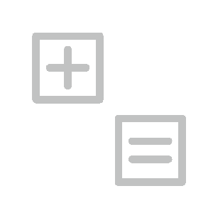
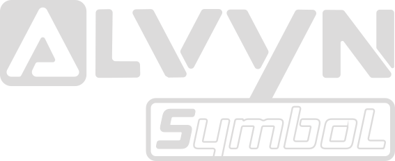

Make it
understandable.
Mathematics, made visible.

Mathematics, made visible.
More interpretable.
A little less black box.
A relationship you can explain on paper.

Designed to uncover relationships in complex data
Run Alvyn Symbol locally on your device to keep your data under your control, work more productively, and turn discoveries into a better world.
A starting point for curious minds

Less mystery. More understanding.